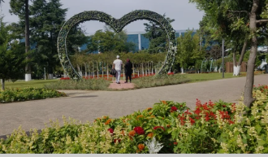

ბათუმის ცენტრალური პარკი (6 მაისის პარკი) აჭარაში, ქალაქ ბათუმში მდებარეობს. იგი ბათუმის პირველი სამოქალაქო ბაღია. პარკის მშენებლობა 1881 წელს დაიწყო, ნური-გელის
ტბის სამხრეთ-აღმოსავლეთ ნაწილში. მშენებლობა პრუსიელ მებაღეს - რესლერს დაევალა. 1884 წელს რესლერი გარდაიცვალა და დაწყებული საქმე ერთი წლით შეჩერდა, 1885 წლიდან
კი ქალაქის ბაღისა და უკვე დაწყებული ბულვარის მშენებლობის ხელმძღვანელად ფრანგი მებაღე მიხეილ დალფონსი მოიწვიეს. თანდათან ბაღი განაშენიანდა, დაირგო სხვადასხვა ჯიშის
ბუჩქოვანი მცენარეები და ხეები. დღესდღეობით მწვანეში ჩაფლული ბაღი ლამაზი ბილიკებითა და ნურის ტბის ხედით უმშვენიერეს სანახაობას წარმოადგენს და ერთ-ერთი შესანიშნავი
ადგილია დასვენებისა და გართობისთვის. პარკის ტერიტორიაზე მდებარეობს დელფინარიუმი და ბათუმის ზოოპარკი, სადაც სახალისო სანახაობებითა და ცხოველებთან ურთიერთობით
დატკბებით. ბაღის გარშემო განლაგებულია სასტუმროები, რესტორნები და კაფეები, სადაც სასიამოვნო დასვენებასა და უგემრიელესი კერძების დაგემოვნებას შეძლებთ. ბათუმის ცენტრა
ლური პარკი ქალაქის ერთ-ერთი მიმზიდველი ადგილია,
როგორც ტურისტებისთვის, ასევე ადგილობრივებისთვის.
